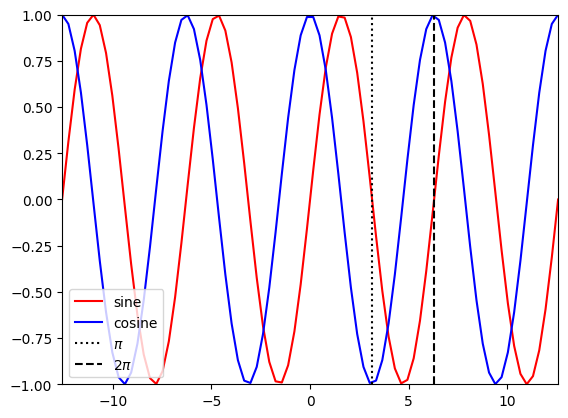
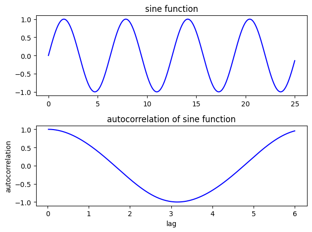
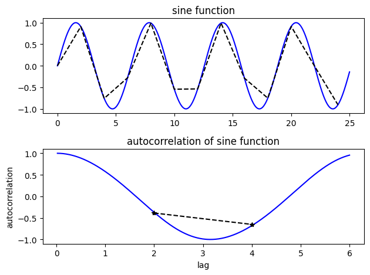
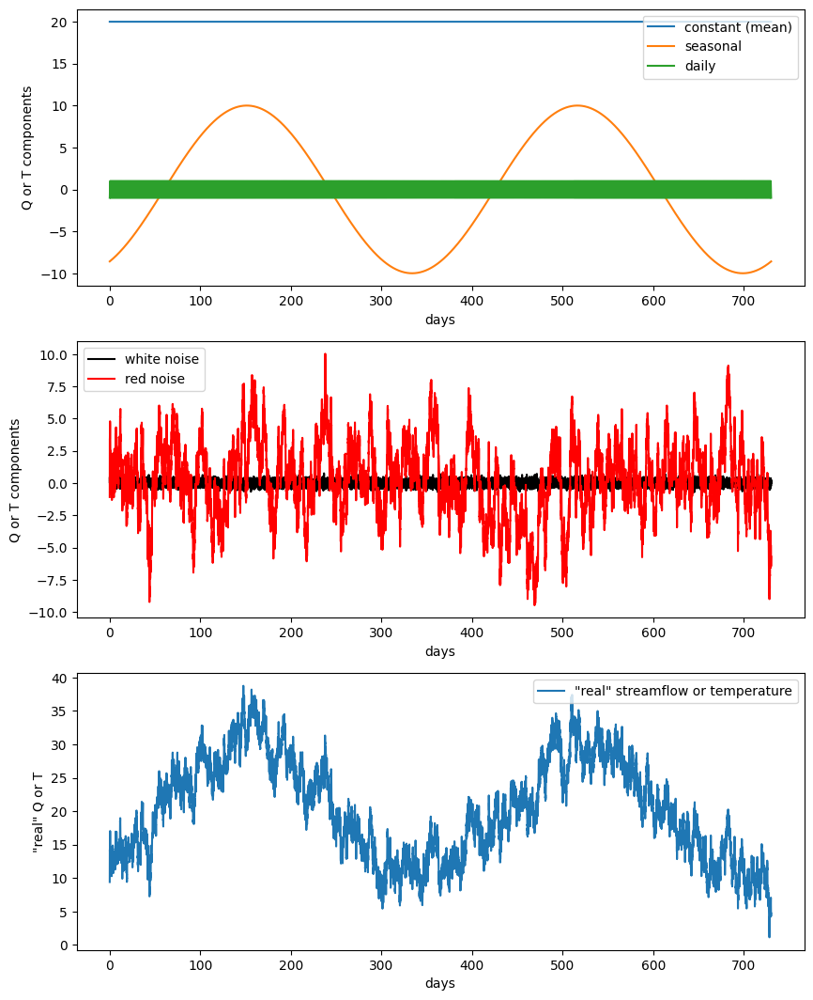
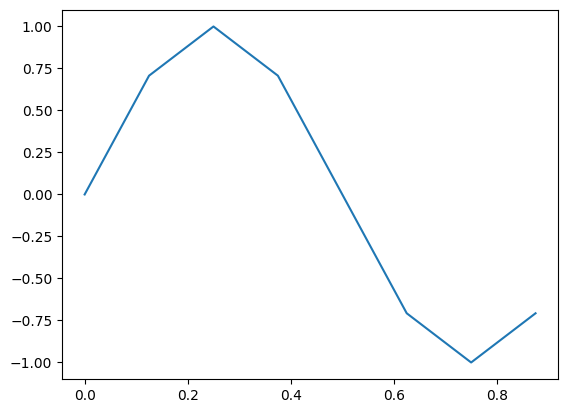
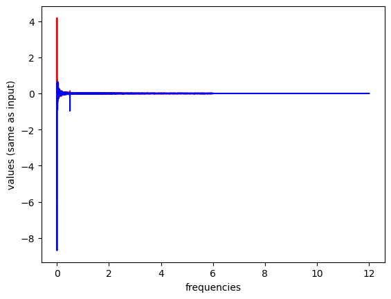
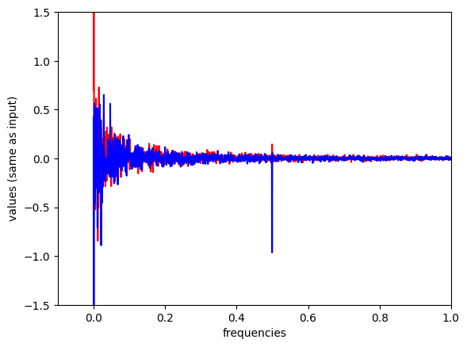
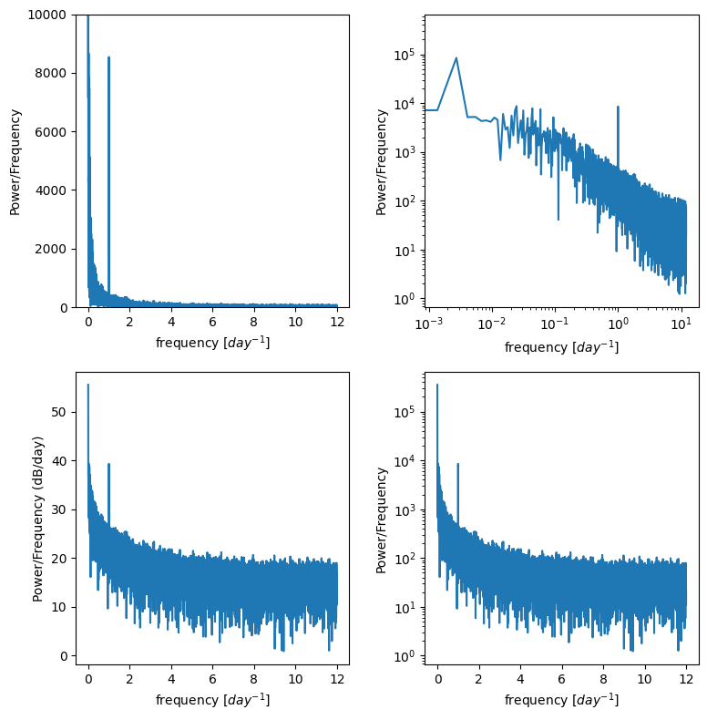
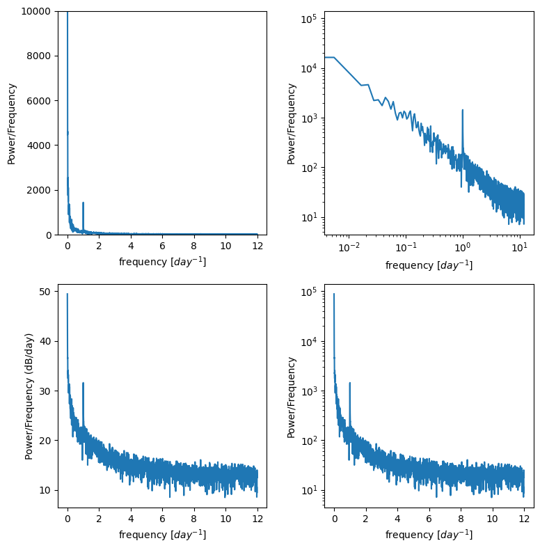
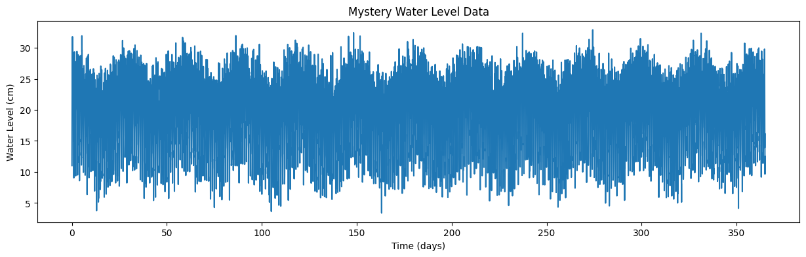

Lab 8-2: Timeseries Lab#
Derived from CEE599_timeseries.m, November 2015, Jessica Lundquist
Converted to python November 2019, Steven Pestana
import numpy as np
import pandas as pd
import scipy.stats as stats
import matplotlib.pyplot as plt
%matplotlib inline
# we'll use scipy's IO library to read .mat files
import scipy.io as sio
Sinusoids, autocorrelation, sampling frequency#
Briefly review sine and cosine functions
t1 = np.linspace(-4*np.pi,4*np.pi,80)
plt.figure()
plt.plot(t1,np.sin(t1),'r-',label='sine')
plt.plot(t1,np.cos(t1),'b-',label='cosine')
plt.plot([np.pi, np.pi],[-1,1],'k:',label='$\pi$')
plt.plot([2*np.pi, 2*np.pi],[-1,1],'k--',label='2$\pi$')
plt.legend(loc='lower left')
plt.xlim((-4*np.pi,4*np.pi))
plt.ylim((-1,1));

Revisit autocorrelation:
Consider the autocorrelation of a sin function at various lags
#Create a sine function evaluated every 0.01 from 0 to 25
# Calculate the autocorrelation at lags from 0.01 (one time-step) to 6 (about a third of the series)
step = 0.01
t2 = np.arange(0,25,step)
y1 = np.sin(t2)
auto1 = []
for lag in range(1,int(6/0.01)):
v = np.corrcoef(y1[:-lag],y1[lag:])
auto1.append(v[0,1])
f, ax = plt.subplots(2,1)
ax[0].plot(t2,y1,'b')
ax[0].set_title('sine function')
ax[1].plot(t2[2:601],auto1,'b')
ax[1].set_title('autocorrelation of sine function')
ax[1].set_xlabel('lag')
ax[1].set_ylabel('autocorrelation')
plt.tight_layout()

Look at the autocorrelation again, but this time we’re undersampling the sine function
# Step is the interval at which we're sampling. Try changing it to larger and smaller numbers
# to test how well we can calculate the true autocorrelation of the sine function
step = 2
t3 = np.arange(0,25,step)
y2 = np.sin(t3)
auto2 = []
for lag in range(1,int(6/step)):
v = np.corrcoef(y2[:-lag],y2[lag:])
auto2.append(v[0,1])
N1=len(t2)
N2=len(t3)
print(N1)
print(N2)
print(len(auto2))
NA = len(auto2)
2500
13
2
f, ax = plt.subplots(2,1)
ax[0].plot(t2,y1,'b')
ax[0].set_title('sine function')
ax[0].plot(t3,y2,'k--')
ax[1].plot(t2[2:601],auto1,'b')
ax[1].set_title('autocorrelation of sine function')
ax[1].set_xlabel('lag')
ax[1].set_ylabel('autocorrelation')
ax[1].plot(t3[1:NA+1],auto2,'k--')
ax[1].plot(t3[1:NA+1],auto2,'k*')
plt.tight_layout()

White vs. Red noise#
First, define a function for “red noise”:
def rednoise(r,var,N):
'''
# r is the lag-1 correlation coefficient
# var is the variance in the original white noise spectrum
# N is the length of the series.
'''
xwhite = np.sqrt(var)*np.random.normal(size=N) # create some white noise
xred = xwhite # start off with white
for ii in range(2,N): # add more red, mix, and repeat
xred[ii] = r*xred[ii-1] + np.sqrt(1-r**2)*xwhite[ii]
return xred
Create some white noise and some red noise
t = np.linspace(0,2*365,(2*365)*24) # 2 years of timeseries, sampled hourly, measured in days, no leap years
sigmaW = 0.2 #set the variance of the white noise
whitenoise = sigmaW*np.random.normal(size=t.size) # make some white noise
sigmaR = 3 #set the variance of the red noise
r = 0.99 # This is the weighting of the lag-1 regression model (how much does each step
# depend on the step prior) -- try varying it from 0.5 to 0.99
var = 1 #This is the variance of the white noise in the lag-1 regression model -- try varying it as well
xred = sigmaR*rednoise(r,var,t.size) #see rednoise function above
Create imaginary snow-fed streamflow timeseries (or an air temperature timeseries) at hourly timesteps
# Streamflow has 3 components
Qmeanflow = 20*np.ones(t.size); # 10 cms baseflow all the time
Qseasonal = 10*np.sin(2*np.pi*(t-60)/365); # annual repeat cycle, peak in May
Qdaily = np.sin(2*np.pi*(t-6/24)); # diurnal cycle, peak at noon
Qsum = Qmeanflow + Qseasonal + Qdaily + whitenoise + xred # simulate data by summing all these components together
# Try changing the weights on different components above and see both
# how that component changes and how the whole timeseries changes.
f, ax = plt.subplots(3,1,figsize=(10,13))
ax[0].plot(t,Qmeanflow,'-',label='constant (mean)')
ax[0].plot(t,Qseasonal,'-',label='seasonal')
ax[0].plot(t,Qdaily,'-',label='daily')
ax[0].legend(loc='upper right')
ax[0].set_ylabel('Q or T components')
ax[0].set_xlabel('days')
ax[1].plot(t,whitenoise,'k',label='white noise')
ax[1].plot(t,xred,'r',label='red noise')
ax[1].legend(loc='upper left')
ax[1].set_ylabel('Q or T components')
ax[1].set_xlabel('days')
ax[2].plot(t,Qsum, label='"real" streamflow or temperature')
ax[2].legend(loc='upper right')
ax[2].set_ylabel('"real" Q or T')
ax[2].set_xlabel('days')
Text(0.5, 0, 'days')

Timeseries analysis#
We want to use timeseries analysis to decompose the final sum into its component parts (because in the real world, we often don’t really know what they are). We’ll use Fourier transforms, but first we need to understand what on earth the computer is doing with that and spitting back at us!
t = np.linspace(0,7/8,8)
f = np.sin(2*np.pi*t)
print(t)
print(f)
plt.figure()
plt.plot(t,f)
[0. 0.125 0.25 0.375 0.5 0.625 0.75 0.875]
[ 0.00000000e+00 7.07106781e-01 1.00000000e+00 7.07106781e-01
1.22464680e-16 -7.07106781e-01 -1.00000000e+00 -7.07106781e-01]
[<matplotlib.lines.Line2D at 0x7f20641f0150>]

Before proceedding, what do you think the coefficients of the Fourier transform should be for this case?
Cns1 = np.fft.fft(f)
print(Cns1)
[ 1.14423775e-17+0.00000000e+00j -4.36483172e-16-4.00000000e+00j
1.22464680e-16-1.11022302e-16j 1.91553812e-16-4.44089210e-16j
2.33486982e-16+0.00000000e+00j 1.91553812e-16+4.44089210e-16j
1.22464680e-16+1.11022302e-16j -4.36483172e-16+4.00000000e+00j]
Note that we got 8 numbers here. This matches our sample size of 8. The first value is the mean, which for our set should be 0.
print(Cns1[0]) #This is the mean value. It should be divided by N, the length of the series
# but in this case, it is 0, so we can just look at it to verify that is so.
# Note that rounding error makes it not perfectly 0.
lengthf=len(f)
print(Cns1[0]/lengthf)
(1.1442377452219667e-17+0j)
(1.4302971815274583e-18+0j)
print(Cns1[1]) #the first value corresponds to the coefficients for a frequency of 1 time per cycle
# the real numbers of the cosine coefficients, and the imaginary numbers are the sine coefficients
(-4.3648317165149033e-16-4j)
#to get coefficients of sine and cosine timeseries, we need to divide by N/2 to normalize
# use that with the values in Cns1
a1 = -Cns1[1].imag / (lengthf/2) # first sine coefficient
b1 = Cns1[1].real / (lengthf/2) # first cosine coefficient
print(a1)
print(b1)
1.0
-1.0912079291287258e-16
Take a moment to make sure you understand the above#
Do these values make sense with what you put in? Try changing the sine and/or cosine amplitudes of the original timeseries. Also, try changing the sampling frequency (more or less frequently) and see what you get.
When you feel comfortable with one sinusoid, move on to the one we created with mulitple cycles and with noise.#
# Now let's take what we learned and apply it to the timeseries we made up earlier.
N = len(Qsum) # make sure it's even
print(N)
17520
# fft of Qsum
Cns = np.fft.fft(Qsum)
sf = 24 # set our sampling frequency in times per day (see how I defined t, timeseries above)
recoveredmean = Cns[0]/N
# Note that in the prior cases we only sampled a period from 0 to 1
# now we have to define our frequencies
f = np.linspace(0,(N/2),N) * (sf/N)
a = np.zeros_like(Cns)
b = np.zeros_like(Cns)
for n in range(1,int(N/2+1)): # values are offset by one because the first one has the mean (no sine or cosine)
a[n-1] = -Cns[n].imag / (N/2) # sine coefficients
b[n-1] = Cns[n].real / (N/2) # cosine coefficients
plt.figure()
plt.plot(f,a,'r',label='sine coefficients')
plt.plot(f,b,'b',label='cosine coefficients')
plt.xlabel('frequencies')
plt.ylabel('values (same as input)')
/opt/hostedtoolcache/Python/3.11.15/x64/lib/python3.11/site-packages/matplotlib/cbook.py:1719: ComplexWarning: Casting complex values to real discards the imaginary part
return math.isfinite(val)
/opt/hostedtoolcache/Python/3.11.15/x64/lib/python3.11/site-packages/matplotlib/cbook.py:1355: ComplexWarning: Casting complex values to real discards the imaginary part
return np.asarray(x, float)
Text(0, 0.5, 'values (same as input)')

plt.figure()
plt.plot(f,a,'r',label='sine coefficients')
plt.plot(f,b,'b',label='cosine coefficients')
plt.xlabel('frequencies')
plt.ylabel('values (same as input)')
plt.xlim((-0.1,1)) # zoom in here
plt.ylim(-1.5,1.5)
(-1.5, 1.5)

Power spectral density#
Often we don’t want the actual coefficients of the sines and cosines, we just want to know at what frequencies our data are varying
Create a Power Spectral Density plot:
p = np.abs(Cns[:N//2]) # take absolute value to "fold over" power for PSD (but only take the first half, positive frequencies)
# Create freq array (but only take the first half, positive frequencies)
_freq = np.fft.fftfreq(Cns.size, 1/sf)
freq = _freq[:N//2]
This basically calculates the amount of energy (or variance) at different frequencies in the timeseries.
Is there a diurnal cycle, a seasonal cycle, or is it close to red noise you square the complex conjugates?
It’s often useful to plot this on log scales as well as regular scales to see what is happening.
f, ax = plt.subplots(2,2,figsize=(8,8))
ax[0,0].plot(freq,p)
ax[0,0].set_ylim((0,10000)) # zoom in on the y axis
ax[0,0].set_ylabel('Power/Frequency')
ax[0,0].set_xlabel('frequency [$day^{-1}$]')
ax[0,1].plot(freq,p)
ax[0,1].set_xscale('log')
ax[0,1].set_yscale('log')
ax[0,1].set_ylabel('Power/Frequency')
ax[0,1].set_xlabel('frequency [$day^{-1}$]')
ax[1,0].plot(freq,10*np.log10(p))
ax[1,0].set_ylabel('Power/Frequency (dB/day)')
ax[1,0].set_xlabel('frequency [$day^{-1}$]')
ax[1,1].plot(freq,p)
ax[1,1].set_yscale('log')
ax[1,1].set_ylabel('Power/Frequency')
ax[1,1].set_xlabel('frequency [$day^{-1}$]')
plt.tight_layout()

For example trying to resolve the diurnal cycle, I don’t need a whole year
I can divide my timeseries into 4 chunks, get P for each and then average them.
winsize = 4380 # I chose this as 1/4th of a year sampled hourly, but you could change, just be even
nwin = np.floor(N/winsize)
xx = np.reshape(Qsum,(int(winsize),int(nwin)),order='F')
def power_spectral_density(x, sf):
# perform fft on x
f = np.fft.fft(x)
# take absolute value to "fold over" power for PSD (but only take the first half, positive frequencies)
p = np.abs(f[:f.size//2])
# Create freq array
_freq = np.fft.fftfreq(f.size, sf)
# (but only take the first half, positive frequencies)
freq = _freq[:_freq.size//2]
return freq, p
Pwin = np.zeros((int(winsize/2), int(nwin)))
# Peform fft on each of the subsets of the total timeseries
for m in range(int(nwin)):
fwin , Pwin[:,m] = power_spectral_density(xx[:,m],1/sf);
p_mean = np.mean(Pwin,axis=1)
f, ax = plt.subplots(2,2,figsize=(8,8))
ax[0,0].plot(fwin,p_mean)
ax[0,0].set_ylim((0,10000)) # zoom in on the y axis
ax[0,0].set_ylabel('Power/Frequency')
ax[0,0].set_xlabel('frequency [$day^{-1}$]')
ax[0,1].plot(fwin,p_mean)
ax[0,1].set_xscale('log')
ax[0,1].set_yscale('log')
ax[0,1].set_ylabel('Power/Frequency')
ax[0,1].set_xlabel('frequency [$day^{-1}$]')
ax[1,0].plot(fwin,10*np.log10(p_mean))
ax[1,0].set_ylabel('Power/Frequency (dB/day)')
ax[1,0].set_xlabel('frequency [$day^{-1}$]')
ax[1,1].plot(fwin,p_mean)
ax[1,1].set_yscale('log')
ax[1,1].set_ylabel('Power/Frequency')
ax[1,1].set_xlabel('frequency [$day^{-1}$]')
plt.tight_layout()

Timeseries analysis with “mystery data”#
Download the file “waterlevel.mat”. It contains hourly measurements of water level (level, in cm) from an unidentified site for one year.
The sampling frequency, sf, is 24, and the timeseries, t, is in days.
Plot the data and zoom in to see what’s going on.
Use the timeseries analysis techniques we’ve discussed to plot the spectral density of this data. Do this both for the entire timeseries and for four equal-sized chunks of the data.
From these plots, identify whether the noise associated is with this data series is red noise or white noise, and identify at what frequencies the timeseries varies.
Based on what you find, where do you think this water level measurement was taken?
Load waterlevel.mat:
data = sio.loadmat('../data/waterlevel.mat')
# previiew the data dictionary we just opened with scipy
data
{'__header__': b'MATLAB 5.0 MAT-file, Platform: MACI64, Created on: Fri Nov 13 14:19:05 2015',
'__version__': '1.0',
'__globals__': [],
't': array([[4.16666667e-02, 8.33333333e-02, 1.25000000e-01, ...,
3.64916667e+02, 3.64958333e+02, 3.65000000e+02]], shape=(1, 8760)),
'Level': array([[11.02017583, 16.13432258, 19.91296503, ..., 16.22284226,
9.6593712 , 12.51936994]], shape=(1, 8760)),
'N': array([[8760]], dtype=uint16),
'sf': array([[24]], dtype=uint8)}
See what the columns of our data are, the dictionary “keys”
data.keys()
dict_keys(['__header__', '__version__', '__globals__', 't', 'Level', 'N', 'sf'])
We can assign these to variables:
time = data['t'][0] # time, in days
level = data['Level'][0] # water level data, in cm
N = data['N'][0][0] # number of data points
sf = data['sf'][0][0] # sampling frequency, in hours
And finally plot the timeseries of waterlevel data:
plt.figure(figsize=(15,4))
plt.plot(time,level)
plt.xlabel('Time (days)')
plt.ylabel('Water Level (cm)')
plt.title('Mystery Water Level Data');

Homework Analysis#
Now, use Fourier Analysis, as we did on our made-up data above, to determine what are the dominant frequencies (and periods) of this timeseries. Based on this analysis, where do you think this water level was measured?